flowchart TD
T[Нагрузки]
T --> L1[Постоянные]
T --> L2[Временные]
T --> L3[Особые]
L2 --> L21[Кратковременные]
L2 --> L22[Длительные]
5 Расчет горизонтальных нагрузок
Excel
Revit
00:00 – Классификация нагрузок
00:38 – Полы и кровля
07:28 – Внутренние перегородки и наружные стены
18:42 – Полезные нагрузки
22:47 – Снеговая нагрузка
Исходные данные
Районы строительства принять по вариантам.
Конспект
Классификация нагрузок
Классификация нагрузок изложена в разделе 5 ⇲ СП 20.13330.2016
Ветровое воздействие
Расчет воздействия ветра описан в разделе 11 ⇲ СП 20.
Нормативное значение основной ветровой нагрузки \(w\) следует определять как сумму средней \(w_m\) и пульсационной \(w_g\) составляющих
\[ w = w_m + w_g. \]
Средняя составляющая
Нормативное значение средней составляющей основной ветровой нагрузки \(w_m\) в зависимости от эквивалентной высоты \(z_e\) над поверхностью земли следует определять по формуле
\[ w_m = w_0 k(z_e) c, \]
где \(w_0\) – нормативное значение ветрового давления;
\(k(z_e)\) – коэффициент, учитывающий изменение ветрового давления для высоты \(z_e\);
\(c\) – аэродинамический коэффициент.
Нормативное значение ветрового давления \(w_0\) определяется по таблице 11.1 ⇲ СП 20 в зависимости от ветрового района. Район принимается по карте 2 приложения Е ⇲ СП 20.
Значения аэродинамических коэффициентов \(c\) определяются по приложению В.1 ⇲ СП 20.
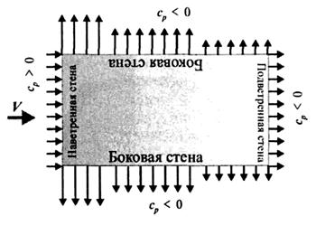
Для наветренных, подветренных и различных участков боковых стен зданий и сооружений значения аэродинамических коэффициентов \(c\) определяются по таблице В.2 ⇲ СП 20. При этом с наветренной стороны здания \(c\) положителен (напор), с подветренной и на боковых стенах – отрицателен (отсос).
Эквивалентная высота \(z_e\) определяется:
1 Для башенных сооружений, мачт, труб, решетчатых конструкций и т.п. сооружений
\(z_e = z\).
2 Для зданий:
а) при \(h ≤ d\)
\(z_e = h\).
б) при \(d < h ≤ 2d\):
\(z ≥ h-d → z_e=h\);
\(0 < z < h-d → z_e=d\).
в) при \(h > 2d\):
\(z ≥ h-d → z_e = h\);
\(d < z < h-d → z_e = z\);
\(0 < z ≤ d → z_e = d\).
Условия а-в графически можно представить на схеме:
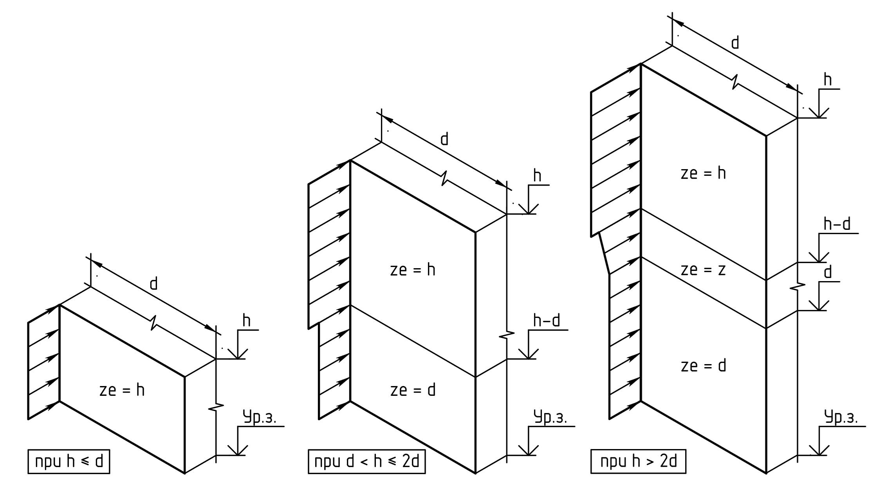
Здесь \(z\) – высота от поверхности земли;
\(d\) – размер здания (без учета его стилобатной части) в направлении, перпендикулярном расчетному направлению ветра (поперечный размер);
\(h\) – высота здания от поверхности земли.
Коэффициент \(k(z_e)\) для высот \(z_e ≤ 300\) м определяется по таблице 11.2 ⇲ СП 20 или по формуле
\[ k(z_e) = k_{10} (z_e/10)^{2\alpha}, 10 ≤ z_e ≤ 300 \text{ м} \]
Значения параметров \(k_{10}\) и \(\alpha\) для различных типов местностей приведены в таблице 11.3 ⇲ СП 20.
Принимаются следующие типы местности:
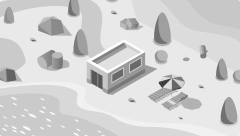
Согласно п. 11.4 ⇲ СП 20 коэффициент надежности по нагрузке для основной и пиковой ветровых нагрузок следует принимать равным 1,4.
Автоматизация расчета
Расчет средней составляющей может быть произведен в Excel или сателлите Вест пакета SCAD Office.
Вкладка Местность позволяет определить основную информацию о климатических районах для заданного района строительства.
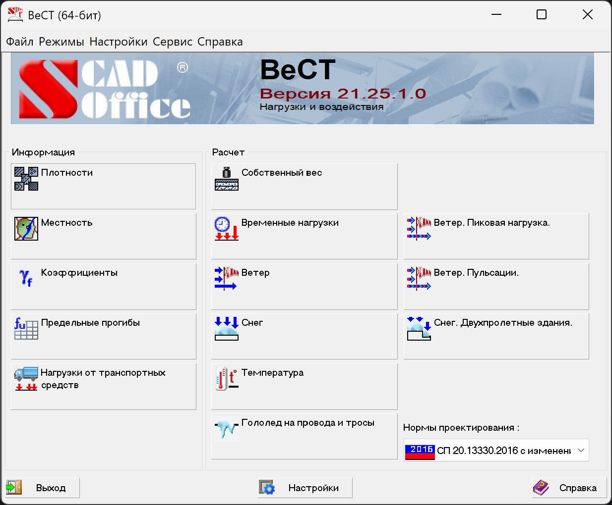
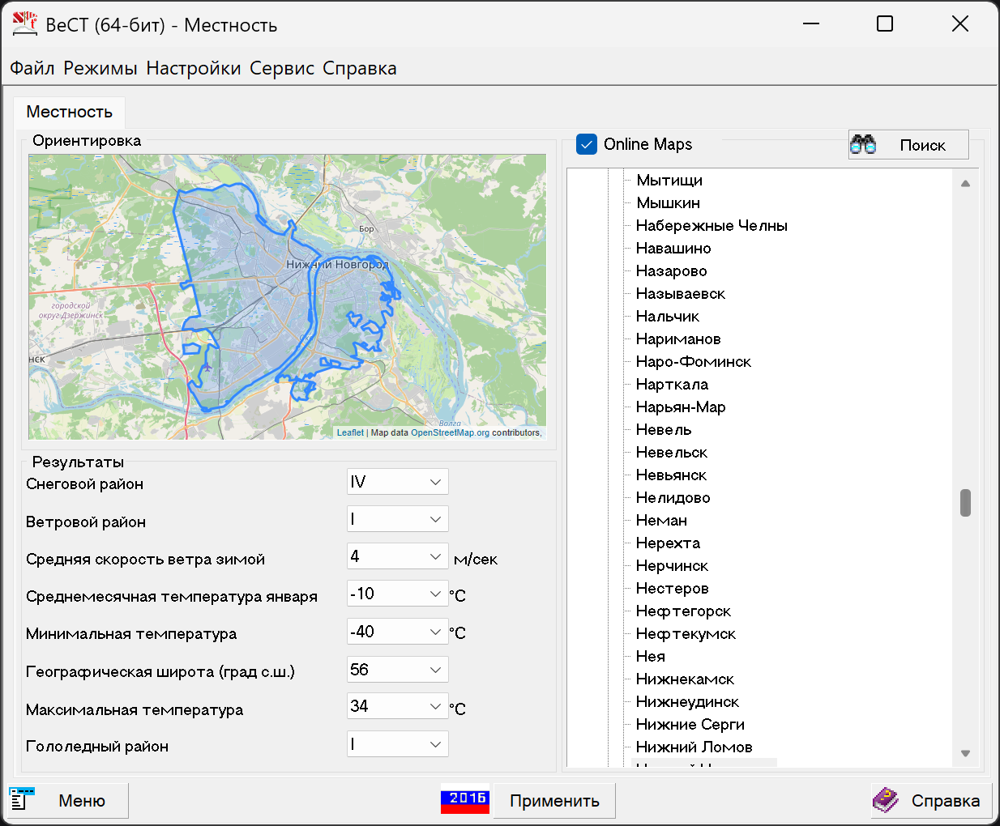
Вкладка Ветер позволяет рассчитать ветровое давление на стены и кровлю зданий или сооружений различных форм. Ниже приведен пример задания параметров для учебного проекта школы для V ветрового района и типа местности B.
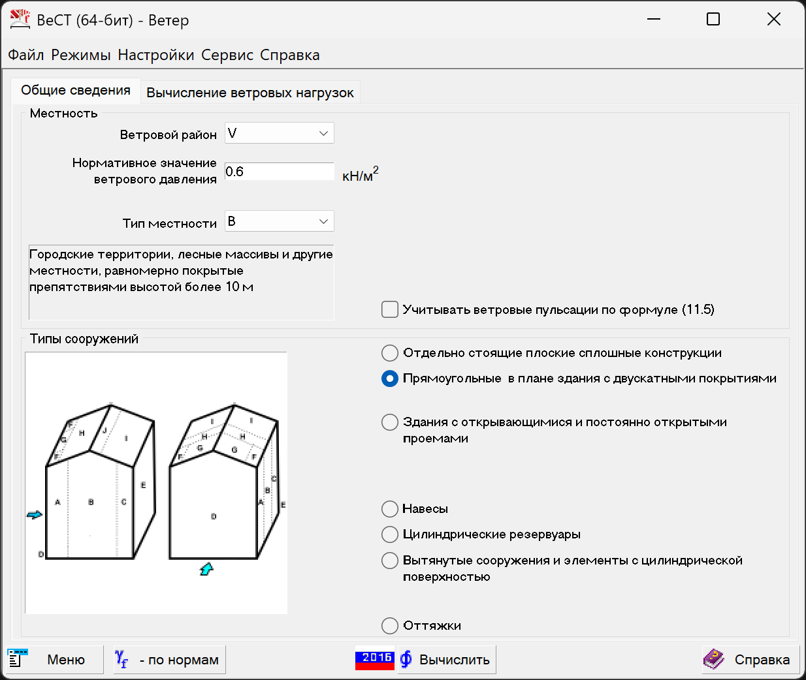
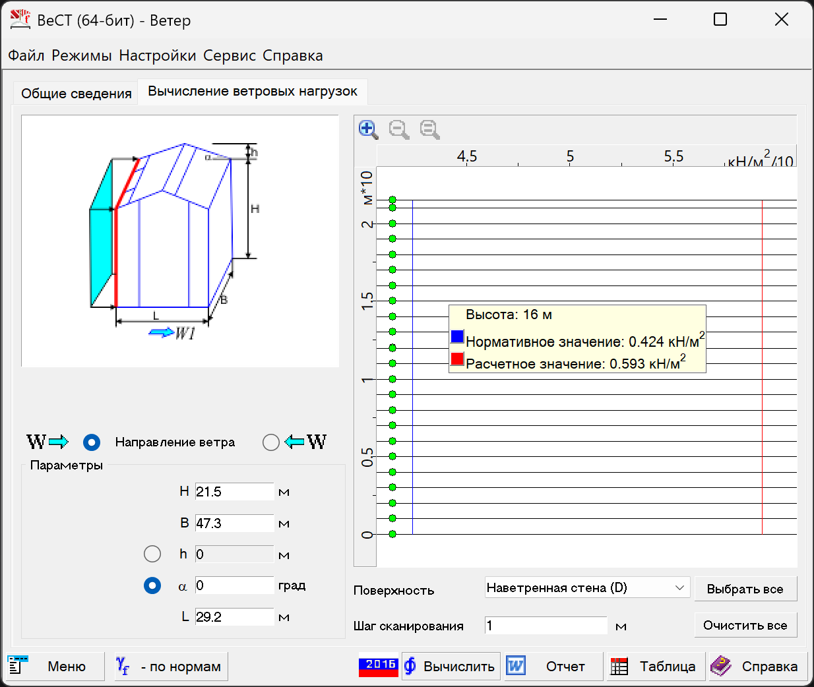
Пример расчета средней составляющей ветровой нагрузки
Для проектируемого здания для любых направлений ветра \(h ≤ d\), следовательно \(z_e = h = 21.5 \text{м}\), где \(h\) – высота здания от поверхности земли.
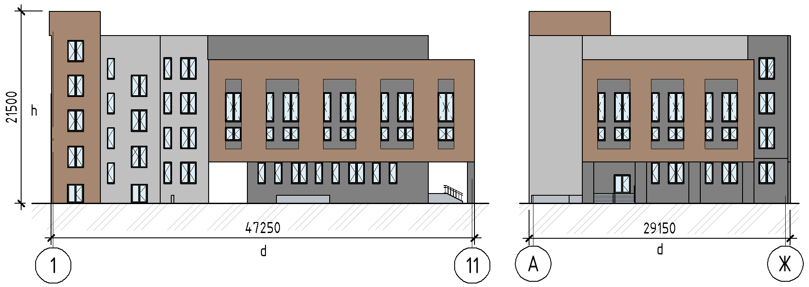
Нагрузка в расчетной схеме будет прикладываться как линейная равномерно распределенная по внешнему контуру перекрытий \(W_n\) [кН/м], расположенных на высоте \(H_n\) от уровня земли. Нагрузка собирается с грузовой полосы высотой \(h_n\), равной расстоянию между серединами смежных этажей.
Поскольку в сателлите Вест-Ветер пакета SCAD Office ветровую нагрузку можно посчитать только как распределенную по площади, удобнее провести расчет сразу в Excel.
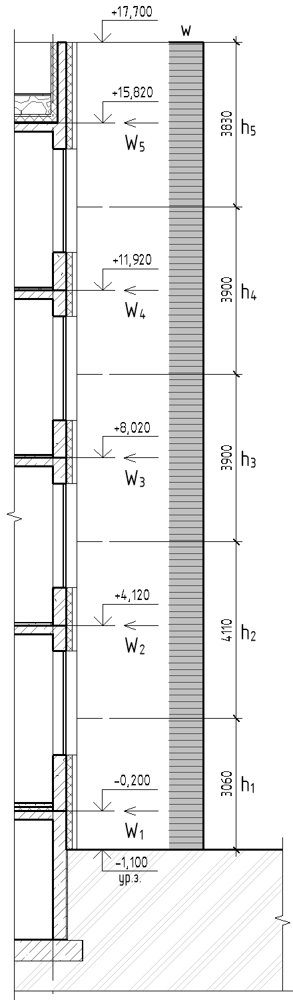
| Район | Тип местности | \(w_0\), кПа | \(k_{10}\) | \(\alpha\) | \(\gamma_f\) |
|---|---|---|---|---|---|
| V | B | 0.6 | 0.65 | 0.2 | 1.4 |
| \(H\), м | \(h\), м | \(z_e\), м | \(k(z_e)\) | Наветренная, | \(c = 0.8\) | Подветренная, | \(с = 0.5\) |
|---|---|---|---|---|---|---|---|
| Норм., кН/м | Расч., кН/м | Норм., кН/м | Расч., кН/м | ||||
| 0.9 | 3.06 | 21.5 | 0.883 | 1.30 | 1.82 | 0.81 | 1.13 |
| 5.22 | 4.11 | 21.5 | 0.883 | 1.74 | 2.44 | 1.09 | 1.52 |
| 9.12 | 3.9 | 21.5 | 0.883 | 1.65 | 2.31 | 1.03 | 1.45 |
| 13.02 | 3.9 | 21.5 | 0.883 | 1.65 | 2.31 | 1.03 | 1.45 |
| 16.92 | 3.83 | 21.5 | 0.883 | 1.62 | 2.27 | 1.01 | 1.42 |
Пульсационная составляющая
Нормативное значение пульсационной составляющей основной ветровой нагрузки \(w_g\) на эквивалентной высоте \(z_e\) определяется как доля от средней составляющей \(w_m\) и зависит от частот собственных колебаний \(f_s\) и предельного значения собственной частоты \(f_{lim}\).
| Условие | Формула расчета \(w_g\) |
|---|---|
| \(f_{lim} < f_1\) | \(= w_m \zeta(z_e) \nu\) |
| \(f_1 < f_{lim} < f_2\) | \(= w_m \xi \zeta(z_e) \nu\) |
| \(f_s < f_{lim} < f_{s+1}\) | с учетом \(s\) первых форм собственных колебаний |
Давление грунта на стены подвала
Актуальные требования к расчету нагрузок на стены подвалов изложены в нормативных документах:
- СП 22.13330.2016 “Основания зданий и сооружений” Актуализированная редакция СНиП 2.02.01-83* (с изм. 1-5)
- Раздел 9 СП 381.1325800.2018 “Сооружения подпорные. Правила проектирования и строительства” (с изм. 1)
Методика по расчету и конструированию подпорных стен и стен подвалов подробно описана в пособии «Проектирование подпорных стен и стен подвалов»: пособие к СНиП 2.09.03-85 «Сооружения промышленных предприятий».
Горизонтальная нагрузка на стены подвала состоит из нескольких составляющих:
- давление от веса грунта \(p_{\gamma}\);
- давление от нагрузки на поверхности \(p_q\);
- давление от веса подземных вод \(p_w\) (при наличии).
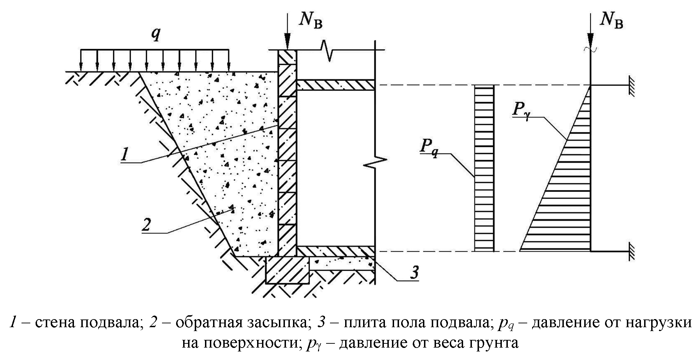
Для вертикальных стен подвала при горизонтальной поверхности обратной засыпки нормативное значение давления грунта на стену подвала \(p_{\gamma}\) определяется по формуле
\[ p_{\gamma} = \gamma h \lambda, \]
где \(\gamma\) – удельный вес грунта;
\(h\) – глубина обратной засыпки;
\(\lambda\) – коэффициент горизонтального давления грунта, вычисляемый по формуле
\[ \lambda = \tan^2\left(45^\circ - \frac{\phi}{2}\right), \]
где \(\phi\) – угол внутреннего трения грунта обратной засыпки.
Согласно п. 6.2.10 СП 381 давление грунта на подпорные сооружения, устраиваемые с обратной засыпкой из привозного песчаного или гравелистого грунта, допускается определять, принимая расчетные значения характеристик грунтов обратной засыпки (\(γ'_I, φ'_I, c'_I\) ), уплотненных до \(k_y=0.95\) их максимальной плотности, в зависимости от характеристик тех же грунтов при максимальной плотности (\(γ_I, φ_I, c_I\)): \(γ'_I =0.95γ_I\); \(φ'_I =0.95φ_I\); \(c'_I = 0\).
Коэффициент надежности по нагрузке \(\gamma_f\) от веса насыпного грунта равен 1,15 (таблица 6.2 СП 381). Если эта нагрузка оказывает благоприятное влияние, то принимается значение 0,85.
Интенсивность горизонтального давления грунта от равномерно распределенной нагрузки, расположенной на поверхности призмы обрушения, при сплошном расположении следует определять по формуле
\[ p_q = q \lambda, \]
Согласно 6.2.21 СП 381 при отсутствии специальных указаний в задании на проектирование и наличии свободной площадки на бровке проектируемого подпорного сооружения, которая может быть потенциально использована для проезда строительной техники, машин, механизмов, складирования материалов и т.п., расчет подпорного сооружения необходимо выполнять с учетом дополнительной равномерно распределенной нагрузки \(q = 20 \text{ кПа}\), приложенной на поверхности грунта в любом месте данной площадки.
Данная нагрузка является осредненной, кратковременной и должна приниматься с коэффициентом надежности по нагрузке \(γ_f=1.0\).
Пример расчета давления на стены подвала
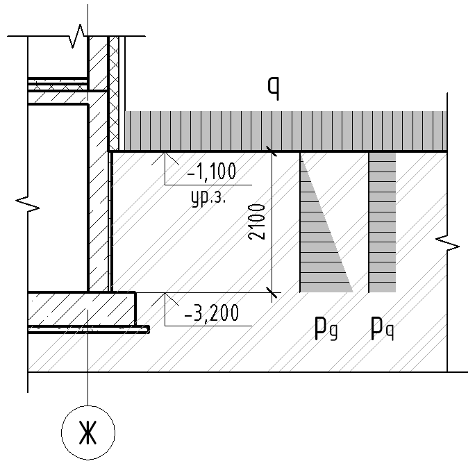
Нагрузка на стены прикладывается как равномерно распределенная по площади [кН/м2]. Уровень грунтовых вод находится ниже фундаментной плиты, поэтому расчет давления от веса грунтовых вод не требуется.
| \(\phi\) | \(\lambda\) | \(h\), м | \(\gamma\), кН/м3 | Норм., кН/м2 | \(\gamma_f\) | Расч., кН/м2 |
|---|---|---|---|---|---|---|
| 20 | 0.490 | 2.1 | 18 | 18.53 | 1.15 | 21.31 |
| \(\phi\) | \(\lambda\) | \(q\), кН/м2 | Норм., кН/м2 | \(\gamma_f\) | Расч., кН/м2 | |
|---|---|---|---|---|---|---|
| 20 | 0.490 | 20 | 9.81 | 1 | 9.81 |